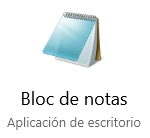
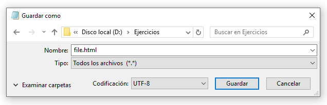

1. Introducción a los ejercicios HTML y CSS¶
Editor de texto¶
Para crear los archivos que se van a ver en este tutorial solo se necesita un simple editor de texto.
En Windows, el más simple es el Block de notas, que tiene la ventaja de encontrarse en todas las versiones de Windows.
A la hora de guardar por primera vez el código HTML o el código CSS hay que seleccionar dos opciones para no tener problemas con el archivo.
El tipo de archivo debe ser "Todos los archivos (*.*)"
Con esta opción, la extensión del archivo se podrá elegir como .html o como .css en vez de guardar la extensión por defecto .txt, que no serviría.
La codificación debe ser UTF-8
De esta forma los caracteres especiales como los acentos o la eñe se guardarán y se visualizarán correctamente.
Para guardar las modificaciones posteriores del archivo .html no es necesario repetir todo este proceso.
Simplemente selecciona en el menú Archivo... Guardar o pulsa Ctrl-G y se guardará correctamente.
Si se quiere utilizar un editor de texto más profesional y con más opciones el editor de texto Notepad++ es libre, gratuito y una gran opción.
La ventaja de utilizar Notepad++ u otro editor de textos avanzado es que estos editores hacen resaltado de sintaxis y eso ayuda mucho a comprobar errores y evitarlos mientras se escribe el código.
Errores de código¶
Normalmente el navegador no muestra los errores que se han cometido al escribir el código. En ocasiones no muestra nada si el código es incorrecto.
Para visualizar los errores de código, en el navegador Firefox seleccionamos en el menú de Herramientas... Desarrollador Web... Inspector
Aparecerá en la parte baja del navegador un conjunto de herramientas muy útil para comprobar qué parte del código corresponde a la pantalla y viceversa.
Esta es una pequeña lista con los errores más habituales. Conviene repasarla antes de buscar otros errores menos comunes.
- No se ha cerrado una etiqueta correctamente. Por ejemplo, en <h1>Título<h1> le falta la barra en la segunda etiqueta: </h1>
- No se ha cerrado un comentario correctamente.
Editor de texto para Linux¶
Existen muchos editores de texto compatibles con el sistema operativo Linux. Los editores por defecto tales como Pluma Text Editor o Gedit sirven para realizar cualquier práctica de este tutorial.
Se recomienda utilizar Gedit con resaltado de sintaxis (syntax hightlighting) para encontrar los errores con más facilidad. Para activar esta opción hay que seleccionar en el menú View... Highlight mode... y el lenguaje utilizado.